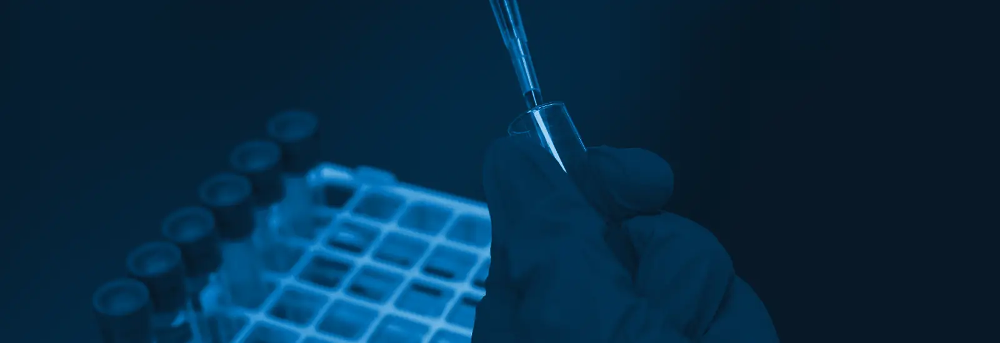
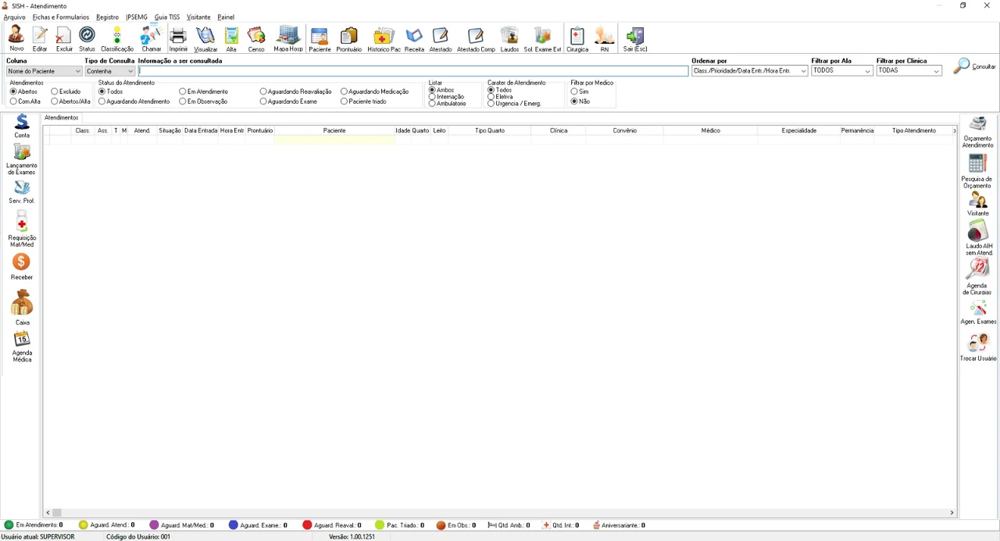
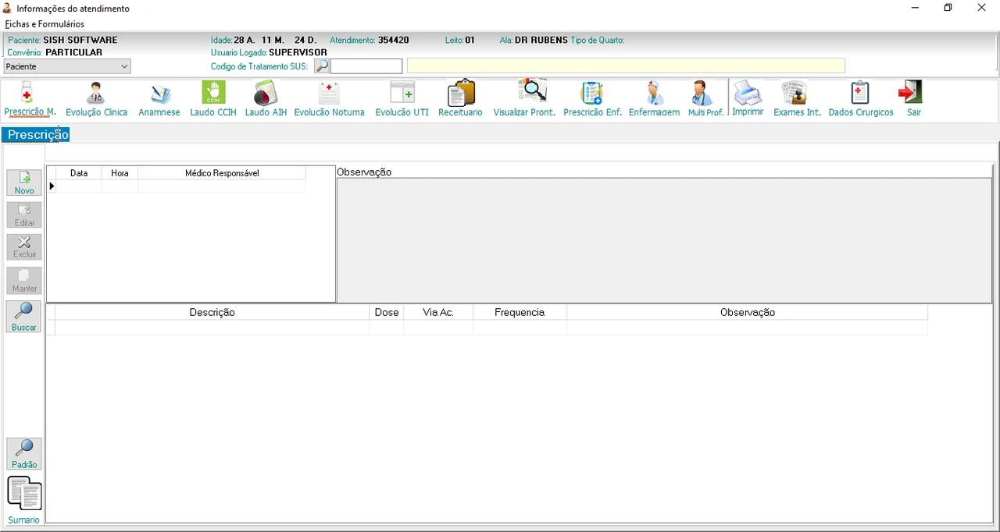
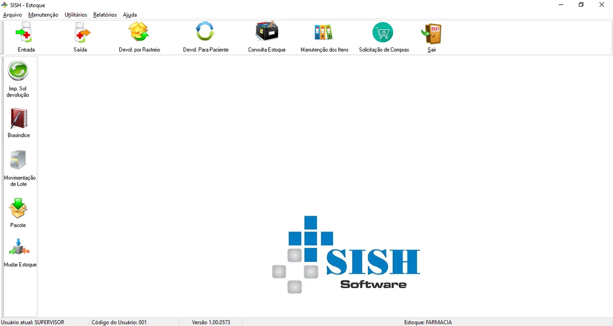
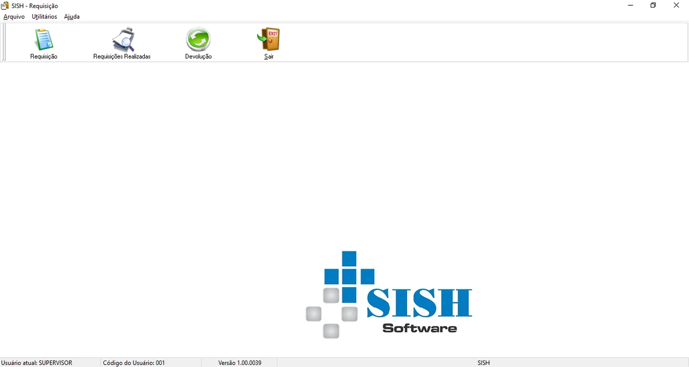
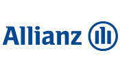

Modernize o atendimentoem seu hospital
Conheça nossas soluções completas em gestão clínica e hospitalar!
Nossas Soluções- +50hospitais clientes
- +15anos de mercado
- Usuáriosilimitados




Nossos Módulos
Clique em um dos módulos abaixo para maiores informações
Faturamento e Financeiro
Suprimentos
Gestão
Por que o SIS-H
-
Da admissão à alta
Uma plataforma modular e integrada que acompanha o paciente do primeiro atendimento à alta e ao faturamento.

Usuários ilimitados
Toda a equipe usa o sistema, sem cobrança por acesso adicional.
Implantação e treinamento sem custo
Implantação e treinamento iniciais incluídos, com início online.
Funcionalidades sob medida
Não cobramos para implementar as funcionalidades de que a sua instituição precisar.
Atualizações e suporte inclusos
Atualizações legais e do sistema e suporte técnico especializado.
Conformidade regulatória
Padrões TISS/TUSS, ANS e Vigilância Sanitária.
Segurança e performance
Arquitetura modular/integrada de alta performance.
Atendimento & Suporte
Horário Regular
Segunda a Sexta: 08:00 às 18:00
Atendimento comercial e suporte técnico aos clientes.
Plantão e Contato
Parceiros & Convênios

O SIS-H contém muito mais rotinas para auxiliar na gestão hospitalar, da admissão do paciente até a alta.
Agende uma apresentação online.
Agendar apresentação online